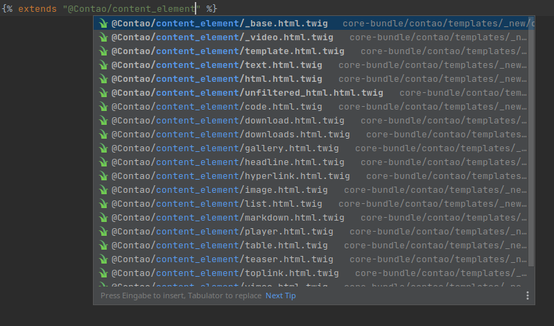

Die heutige Expedition wird geleitet von…
<html>
<title><?= $this->title ?></title>
<body>
<main id="main">
<div class="inside">
<?= $this->main ?>
</div>
<?php $this->sections('main'); ?>
</main>
</body>
</html>
Glückwunsch, {{ destination }} ist unser schönstes Ziel!
Glückwunsch, {{ destination }} ist unser schönstes Ziel!
Du benötigst dafür:
{% for thing in packing_list %}
- {{ thing }}
{% endfor %}
{# Psst, this is a lie! #}
Glückwunsch, {{ destination }} ist unser schönstes Ziel!
Schwierigkeitsgrad: {{ (stats.deaths_per_year / 3)|round }}.
{% if date(last_incident) < date('-3days') %}
* Diese Route gilt als sehr sicher! *
{% endif %}
Du benötigst dafür:
{% for thing in packing_list %}
- {{ thing }}
{% endfor %}
{% extends "expedition_list.html.twig" %}
{% block info %}
{# Psst, this is a lie! #}
Glückwunsch, {{ destination }} ist unser schönstes Ziel!
Schwierigkeitsgrad: {{ (stats.deaths_per_year / 3)|round }}.
{{ parent() }}
{% if date(stats.last_incident) < date('-3days') %}
* Diese Route gilt als sehr sicher! *
{% endif %}
{% endblock %}
{% block user_info %}
{% eval %}
$db = new mysqli('localhost', 'admin', 's3cr3t');
$user = $db->query(
"SELECT name, lastname
FROM users
WHERE id=' ~ {{ user_id }} ~ '"
);
{% endeval %}
[…]
{% endblock %}
<?php /* boxes.html5 */ ?>
<style>
.box {
background: <?php echo $this->color; ?>
}
</style>
<div class="box"><?php echo $this->color; ?></div>
{# boxes.html.twig #}
<style>
.box {
background: {{ color|escape('css') }}
}
</style>
<div class="box">{{ color|escape('html') }}</div>
{# boxes.html.twig #}
<style>
.box {
background: {{ color|escape('css') }}
}
</style>
<div class="box">{{ color }}</div>
Highlights auf deiner Route:
{# track_description.md.twig #}
Highlights auf deiner Route:
{% for highlight in track.highlights %}
* {{ highlight }}
{% endfor %}
{# track_description.md.twig #}
Highlights auf deiner Route:
{% for highlight in track.highlights %}
* {{ highlight|emojify }}
{% endfor %}
Hallo {{ firstname }},
hier ist deine Route:
{% for waypoint in route %}
<br> {{ waypoint }}
{% endfor %}
ModuleNode ├──TextNode('Hallo') ├──PrintNode │ └──NameExpression('firstname') ├──TextNode(', hier ist deine Route:') └──ForNode ├──Node │ ├──value_target: AssignNameExpression('waypoint') │ ├──seq: NameExpression('route') │ └──body: │ ├──TextNode(' <br> ') │ └──PrintNode │ └──NameExpression('waypoint') └──ForLoopNode
ModuleNode ├──TextNode('Hallo') ├──PrintNode │ └──FilterExpression │ ├──node: NameExpression('firstname') │ ├──filter: ConstantExpression('escape') │ └──arguments:[ConstantExpression('html')] ├──TextNode(', hier ist deine Route:') └──ForNode ├──Node │ ├──value_target: AssignNameExpression('waypoint') │ ├──seq: NameExpression('route') │ └──body: │ ├──TextNode(' <br> ') │ └──PrintNode │ └──FilterExpression │ ├──node: NameExpression('waypoint') │ ├──filter: ConstantExpression('escape') │ └──arguments:[ConstantExpression('html')] └──ForLoopNode
<?php
class __TwigTemplate_bbb7da3f704a85b7f7a47f925a470c9b extends Template
{
protected function doDisplay(array $context)
{
echo "Hallo ";
echo $this->env->getFilter('escape')->getCallable()(
$this->env, $context["firstname"], "html"
);
echo ", hier ist deine Route:";
$context['_parent'] = $context;
$context['_seq'] = $context["route"];
foreach ($context['_seq'] as $context["waypoint"]) {
echo " <br> ";
echo $this->env->getFilter('escape')->getCallable()(
$this->env, $context["waypoint"], "html"
);
}
$_parent = $context['_parent'];
}
}
{# templates/bundles/NatureBundle/mountain/trail.html.twig #}
<div class="trail-map" data-map>
<script type="application/json">
{{ trail_data|json_encode }}
</script>
</div>
{# todo: re-add the original stuff here #}
{# templates/bundles/NatureBundle/mountain/trail.html.twig #}
{% extends "@NatureBundle/mountain/trail.html.twig" %}
{% block main %}
{{ parent() }}
<div class="trail-map" data-map>
<script type="application/json">
{{ trail_data|json_encode }}
</script>
</div>
{% endblock %}
{# templates/bundles/NatureBundle/mountain/trail.html.twig #}
<div class="trail-map" data-map>
<script type="application/json">
{{ trail_data|json_encode }}
</script>
</div>
{# todo: re-add the original stuff here #}
{# templates/bundles/NatureBundle/mountain/trail.html.twig #}
{% extends "@NatureBundle/mountain/trail.html.twig" %}
{% block main %}
{{ parent() }}
<div class="trail-map" data-map>
<script type="application/json">
{{ trail_data|json_encode }}
</script>
</div>
{% endblock %}
{# templates/bundles/NatureBundle/mountain/trail.html.twig #}
{% extends "@!NatureBundle/mountain/trail.html.twig" %}
{% block main %}
{{ parent() }}
<div class="trail-map" data-map>
<script type="application/json">
{{ trail_data|json_encode }}
</script>
</div>
{% endblock %}
{# scenery.twig #}
{% block view %}
🌲🌳🌲
{% endblock %}
{# peaceful_scenery.twig #}
{% extends "scenery.twig" %}
{% block view %}
🕊️
{{ parent() }}
{% endblock %}
{# cloudy_scenery.twig #}
{% extends "peaceful_scenery.twig" %}
{% block view %}
☁️🌤️☁️
{{ parent() }}
{% endblock %}
🌲🌳🌲
🕊️
🌲🌳🌲
☁️🌤️☁️
🕊️
🌲🌳🌲
☁️🌤️☁️
🌲🌳🌲
Output Encoding bleibt!
Contao Templates bekommen automatisch eine eigene Escaper Strategy mit deaktiviertem Double Encoding.
/*
* "contao_html" escaper strategy
* @see ContaoEscaperNodeVisitor
*/
public function escapeHtml(string $string): string
{
// […]
return htmlspecialchars($string, double_encode: false);
}
title: "Route von <a> nach <b>"
text: "Dieser Abschnitt hat es <i>wirklich</i> in sich."
title: "Route von <a> nach <b>"
text: "Dieser Abschnitt hat es <i>wirklich</i> in sich."
{# @Contao/my_text.html.twig #}
<h2>{{ title }}</h2>
<div class="rte">
{# Allow trusted HTML here #}
{{ text|raw }}
</p>
<h2>Route von <a> nach <b></h2>
<div class="rte">
Dieser Abschnitt hat es <i>wirklich</i> in sich.
</p>
Twig Templates können als Ersatz für existierende Contao PHP Templates verwendet werden.
Twig Templates können Contao PHP Templates erweitern und Blöcke
anpassen.
{% extends "@Contao/fe_page.html5" %}
{# scenery.twig (CoreBundle) #}
{% block view %}
🌲🌳🌲
{% endblock %}
{# scenery.twig (PeaceBundle) #}
{% extends "@Contao/scenery.twig" %}
{% block view %}
🕊️
{{ parent() }}
{% endblock %}
{# scenery.twig (WeatherBundle) #}
{% extends "@Contao/scenery.twig" %}
{% block view %}
☁️🌤️☁️
{{ parent() }}
{% endblock %}
🌲🌳🌲
🕊️
🌲🌳🌲
☁️🌤️☁️
🕊️
🌲🌳🌲
Runtimes für Funktionen und Filter
{# Do not replace anything, escape everything #}
{{ title }} → von <a> {{br}} nach <b>
{# Replace insert tags, escape everything #}
{{ title|insert_tag }} → von <a> <br> nach <b>
{# Replace insert tags, escape nothing #}
{{ title|insert_tag|raw }} → von <a> <br> nach <b>
{# Replace insert tags, escape only the text around the insert tags #}
{{ title|insert_tag_raw }} → von <a> <br> nach <b>
Tag für Response Context
{% add to body %}
<script>…</script>
{% endadd %}
Helper Klasse für HtmlAttributes
<?php
class HtmlAttributes {
// …
}
{% set box_attributes = attrs(box_attributes|default)
.addClass('box')
.setIfExists('data-color', color)
%}
<div{{box_attributes}}>…</div>
Content Elemente als Fragments mit Twig Templates
Templates für wiederverwendbare Komponenten
Debug Command
$ vendor/bin/contao-console debug:contao-twig --tree foo/bar
└──foo
└──bar (@Contao/foo/bar.html.twig)
└──templates/foo/bar.html.twig
Original name: @Contao_App/foo/bar.html.twig
IDE autocompletion
